A quiet place
for words that
last.
MarKing is a local-first Markdown editor for the desktop. Live preview, math and diagrams, linked notes, AI assistance, and polished export — while your words remain plain-text files on your own disk.
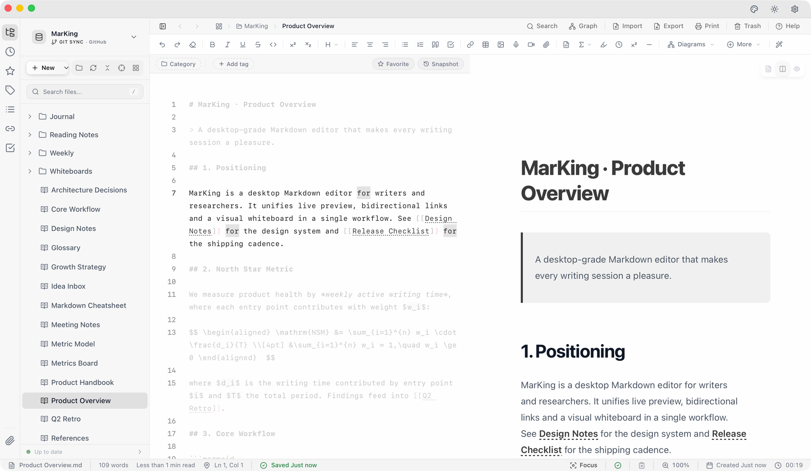
Plain text, no lock-in
Your notes are .md files on your own disk. Any editor can open them — no proprietary format.
Zero tracking
No telemetry, behavioral data, or personal information. No ads, no sign-up.
Native speed
Compiled natively. Cold starts in under two seconds; 100,000-word documents still scroll smoothly.
Every desktop
Windows, macOS (Apple silicon and Intel), and Linux — one consistent experience.
01Writing
Focus on the next sentence.
Live split preview, typewriter scrolling, paragraph focus, and three levels of immersion. The interface shows up when you need it — and steps aside when you write.
Demo: Markdown typed on the left renders instantly on the right.
Live split preview
Switch between edit, split, and preview at any time. Scrolling stays in sync, even in long documents.
Focus & immersion
CtrlShiftEnterTypewriter scrolling and paragraph focus. Three immersion levels leave nothing but the text.
Command palette
CtrlShiftPEvery action within reach of the keyboard. Jump between documents in milliseconds.
Smart completion
Tab70+ snippets, with instant hints for LaTeX commands and code-fence languages.
Quick capture
CtrlAltMA system-wide hotkey opens a mini window, and ideas land straight in your Inbox.
Lite mode
Double-click any .md file and it opens instantly, with a minimal footprint.
02Expression
Equations, diagrams, and sketches — all in one document.
Technical writing takes more than words. Visual math, Mermaid diagrams, hand-drawn whiteboards, and table editing are built right into the editor — no app-switching required.
Math
Edit equations visually with MathLive and a virtual keyboard. \label and \eqref number them automatically, with click-to-jump references.
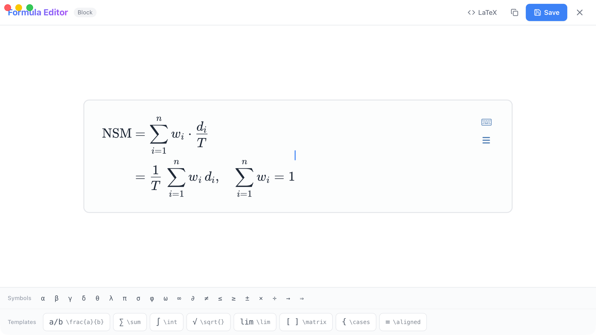
Diagrams
Full Mermaid 11 support, including eight new chart types such as architecture, timeline, Sankey, and C4.
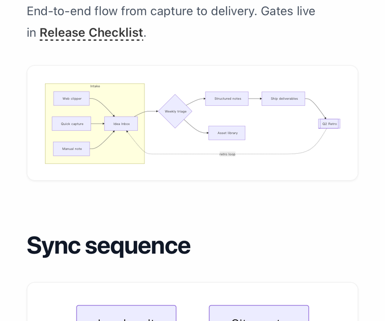
Tables
Edit Markdown tables like a spreadsheet. Cells can hold line breaks, and your original formatting survives every save.
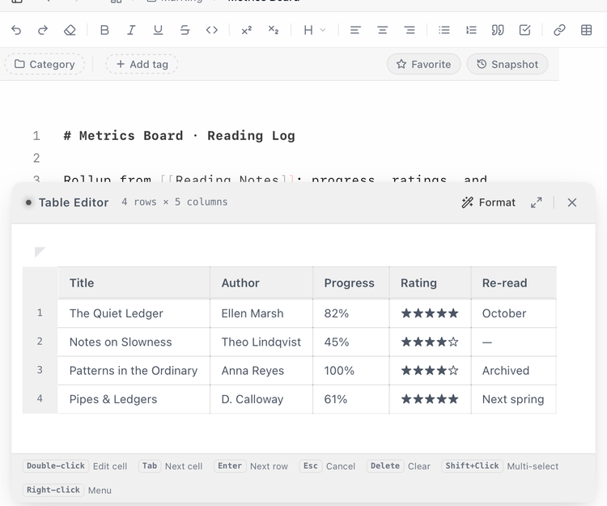
Whiteboard
Embedded Excalidraw for hand-drawn flows and architecture sketches, right inside your notes.
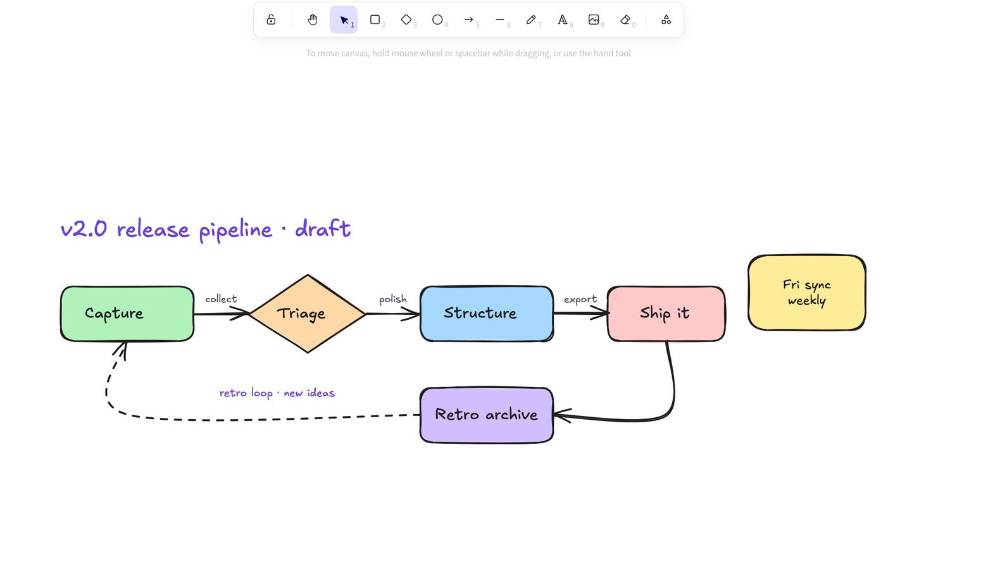
Also built in — Callouts · Footnotes · Task lists · Code themes · Sub- and superscript · CJK auto-spacing · HTML files
03Connection
No note is an island.
Link ideas with [[WikiLinks]]. Backlinks and an interactive knowledge graph show how everything connects — and web pages, Word files, and PDFs become Markdown notes in a single step.
WikiLinks
Type [[ to link any note. Backlinks are gathered for you.
Knowledge graph
Stays fluid even with ten thousand nodes, with full-screen mode and image export.
Bring everything in
CtrlShiftVTurn web pages, Word, EPUB, and PDF into Markdown in one step. Rich text pastes as clean Markdown.
Tasks
Every to-do across your vault in one place, with priorities and due dates. Check one off and the source note updates.
Templates & daily notes
CtrlAltDSix built-in templates with date variables; open today's note in one keystroke.
04AI
AI assists.
You hold the pen.
Connect the models you trust, then polish, translate, format, and draft without leaving the editor. Every change arrives as a diff, and you decide what stays.
AI Format
CtrlAltFRestructure and clean up a document in one step. Every edit appears as a diff you can accept or reject.
Inline AI
Select text to rewrite, summarize, translate, or expand it. Output streams in, and you can stop anytime.
Writing Flow
Compose an article from several notes, or extract an outline. Refine over multiple rounds and save drafts to your vault.
Your models, your keys
18+ providers built in, plus any compatible API. Keys are encrypted on your device, and requests go straight to the provider you choose. Notes tagged #private are skipped by AI Format and Writing Flow.
The hardest part of writing isn't the beginning — it's keeping going. Write a little every day, even three hundred words, and time will bind them into a book.
Write a little each day. Three hundred words at a time, the days become a book.
MCP Server
Let your AI clients read your vault.
Claude Desktop, Cursor, Cline, and other MCP clients can search, read, and write notes and tasks over local stdio. It's off by default, write access needs separate approval, and every write is recorded in an audit log.
05Privacy & sync
Your words stay yours.
Your notes are .md files on your own disk — open them in any editor, and they'll still be readable years from now. When you need them on another machine, sync to a Git repository you control.
Git sync
Every save commits and pushes to your own GitHub, GitLab, Gitee, or self-hosted repository. On conflict, compare file by file and choose — nothing is lost.
Compare & history
Diff against any snapshot or document, side by side. Browse every commit, preview old versions, and restore in one click.
Snapshots & backup
Silent autosave after two seconds, with history snapshots to roll back to. Back up a whole vault in one click and restore it completely.
- 0Telemetry
- No usage data, device fingerprints, or personal information.
- 0Accounts
- Nothing to sign up for. Open it and write.
- 0Open ports
- MCP talks over local stdio and never listens on the network.
- 256Bit AES
- API keys are encrypted on your device, never synced, never backed up.
Update checks send only the app version, OS, and architecture — and can be turned off in Settings. Read the privacy policy ↗
06Publishing
From draft to deliverable.
The DOCX engine generates the cover page, table of contents, headers, and footers in one pass — fonts, spacing, and page details are all tunable. PDFs ship with a bookmarked outline, and HTML exports travel as a single file.
CtrlShiftEopens export from anywhere
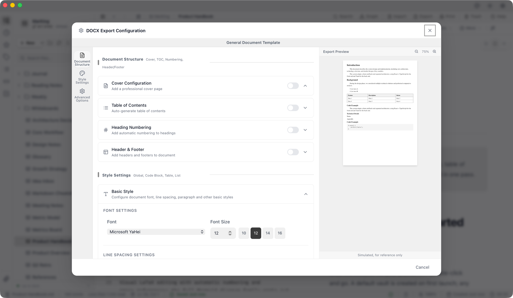
07Themes
Twenty moods. One focus.
From Paper White to Cool Black, 20 hand-tuned themes follow your system's light and dark mode. Code block themes, fonts, sizes, and interface density are yours to set, too.
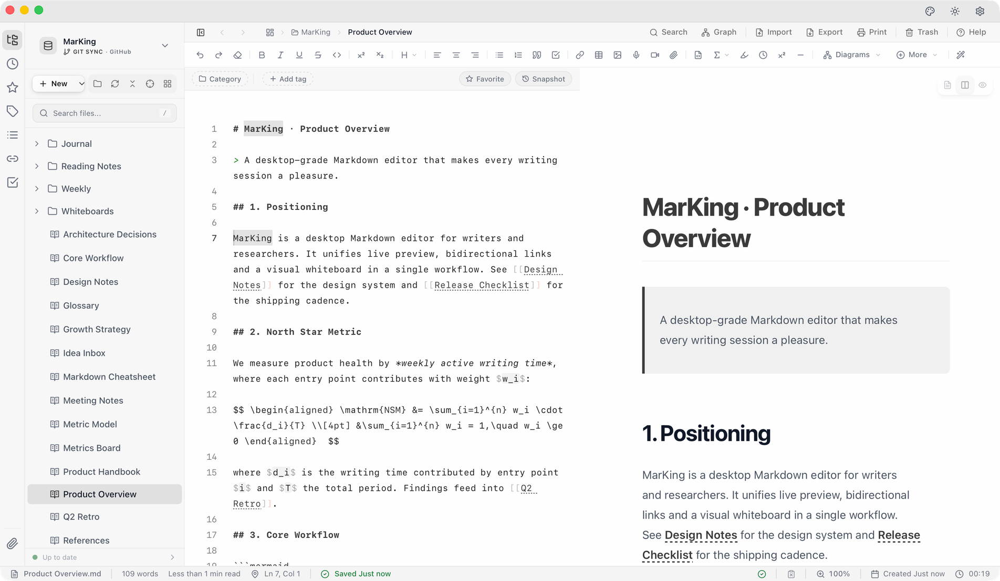
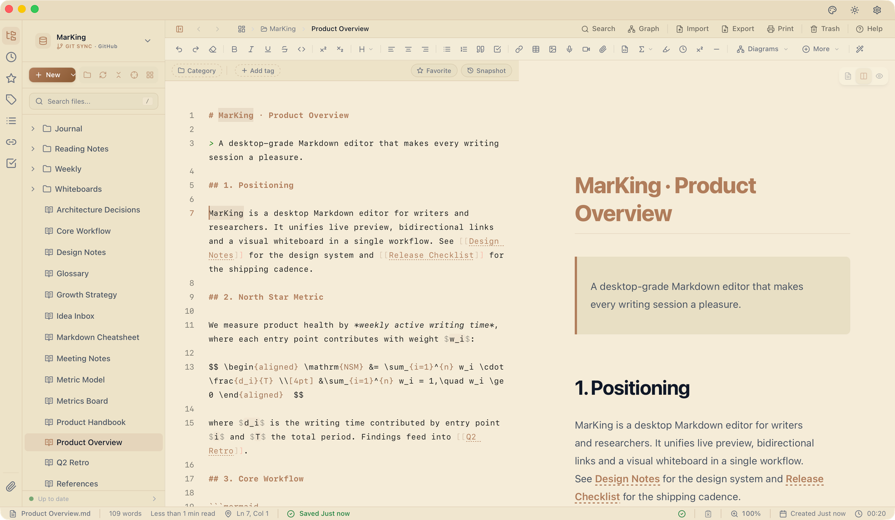
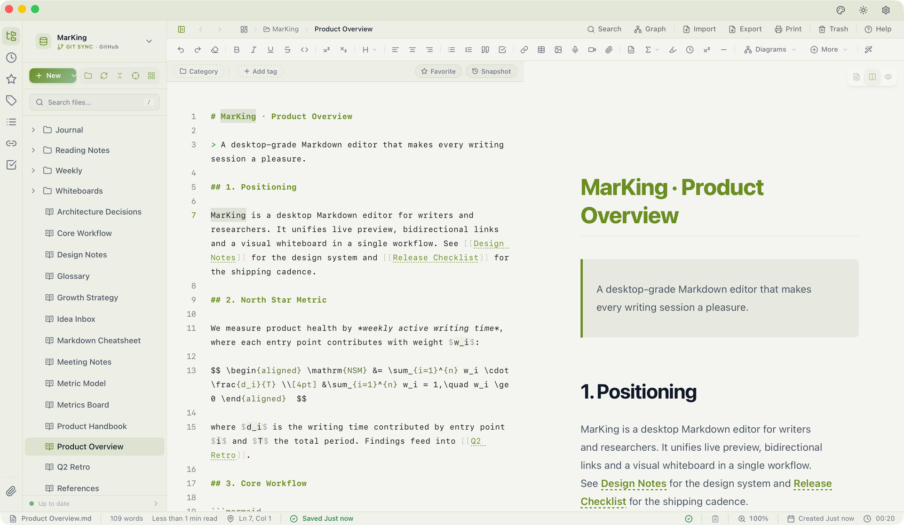
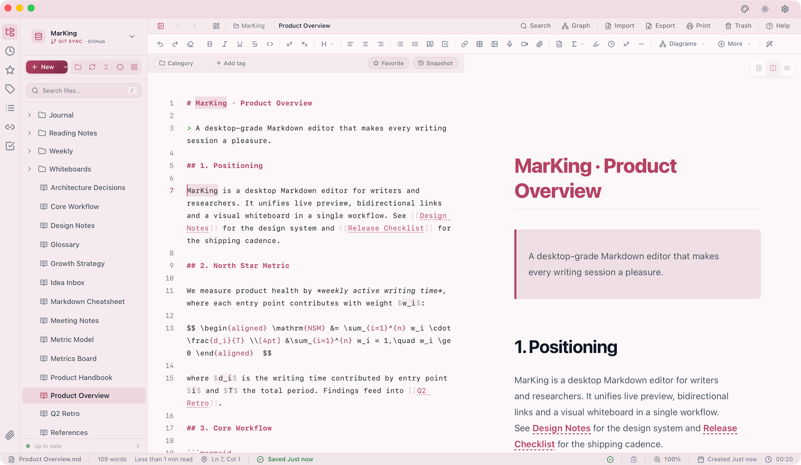
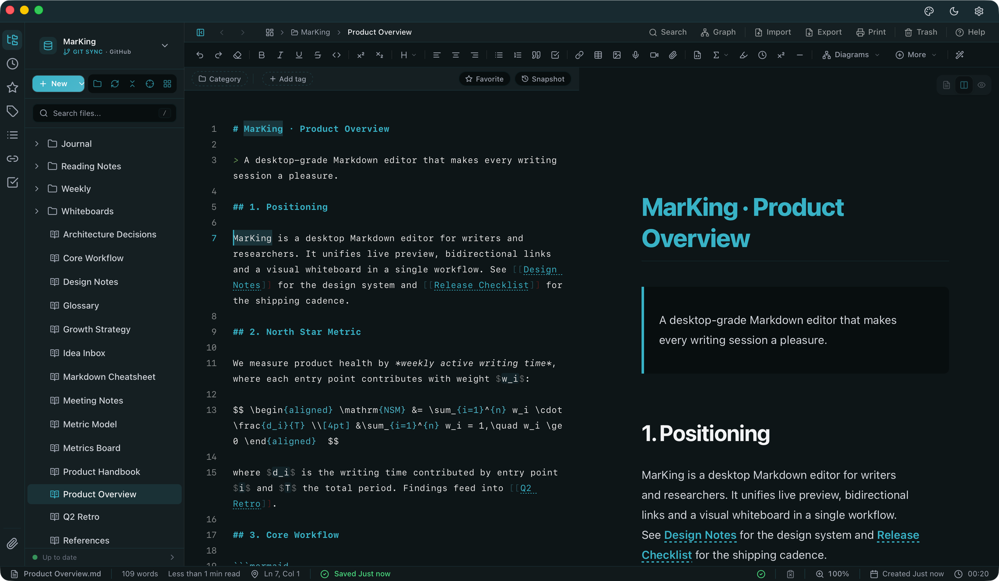
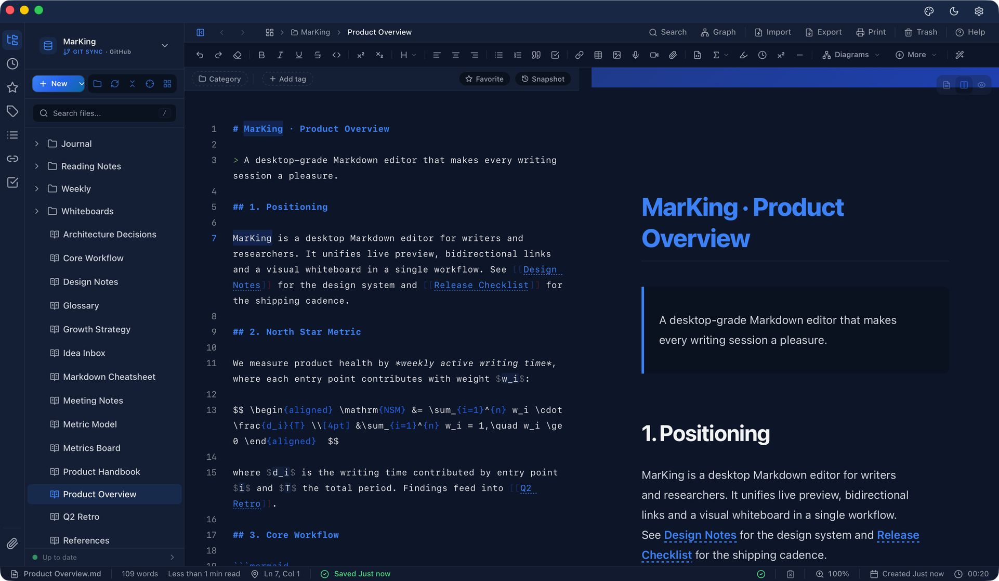
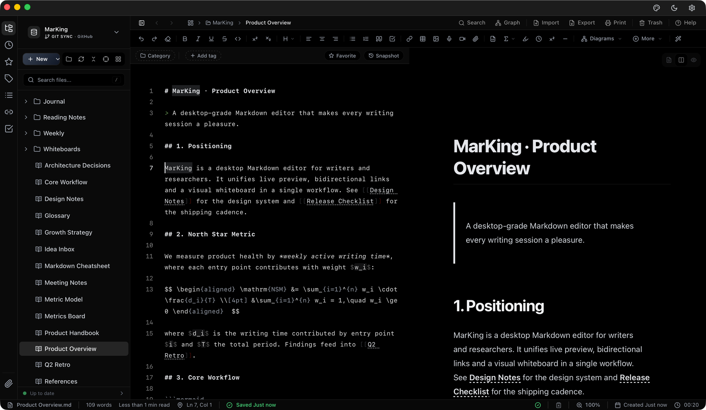
Twelve more themes — plus code palettes such as Dracula, Nord, and Tokyo Night — are waiting in the app.
Your next piece
starts
here.
MarKing v1.6.0 is free to download, built natively for Windows, macOS, and Linux.
Windows
Windows 10 or later · x64
EXE or MSI installer
macOS
macOS 10.15 or later
Apple silicon & Intel · DMG
Linux
Major distributions · x64 / ARM64
AppImage / deb / rpm
Support MarKing
Support MarKing
MarKing is independent software — no ads, no tracking. Every release is made possible by the people who use it. If it makes your writing better, consider buying the author a coffee, or leaving a star on GitHub.